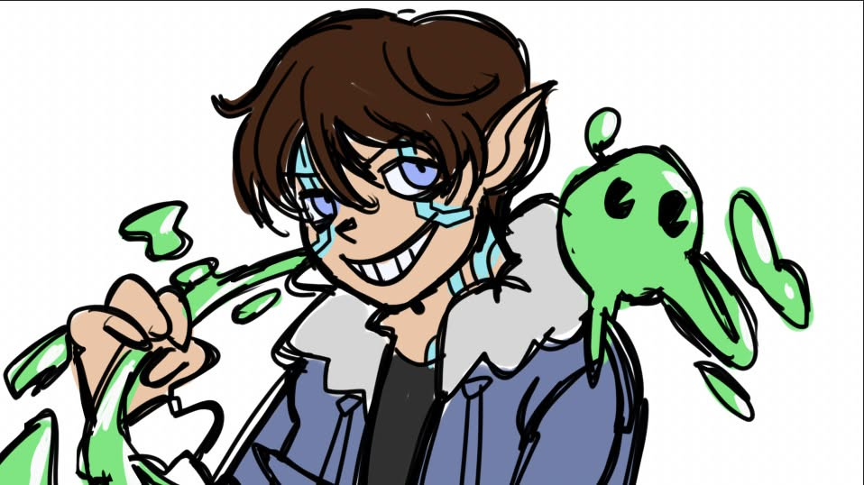
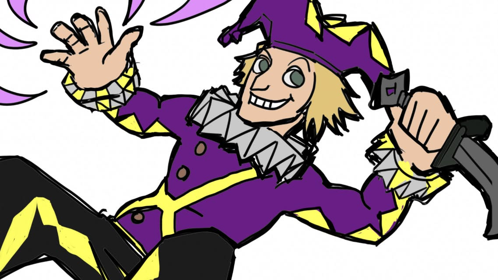
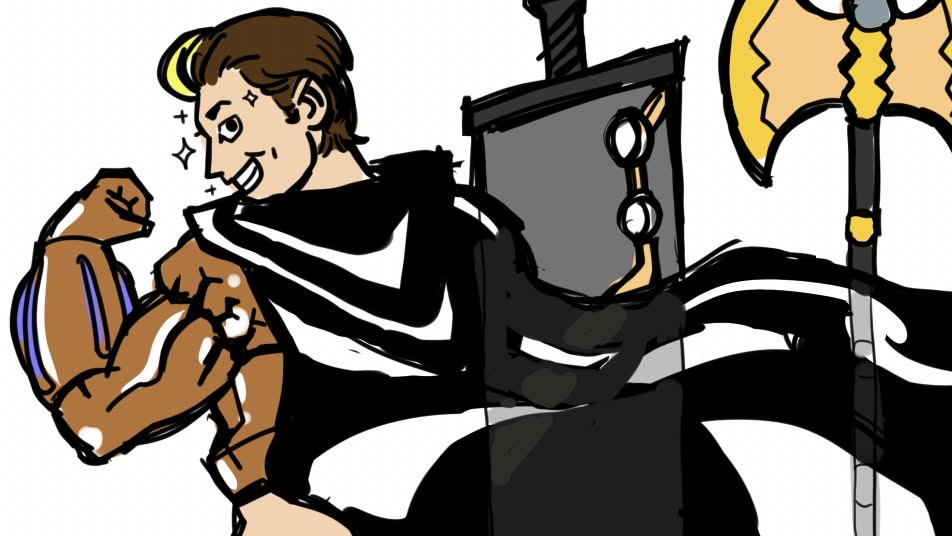
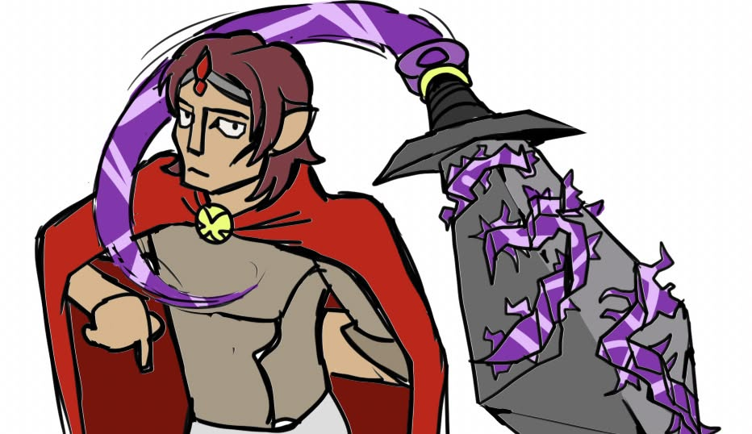
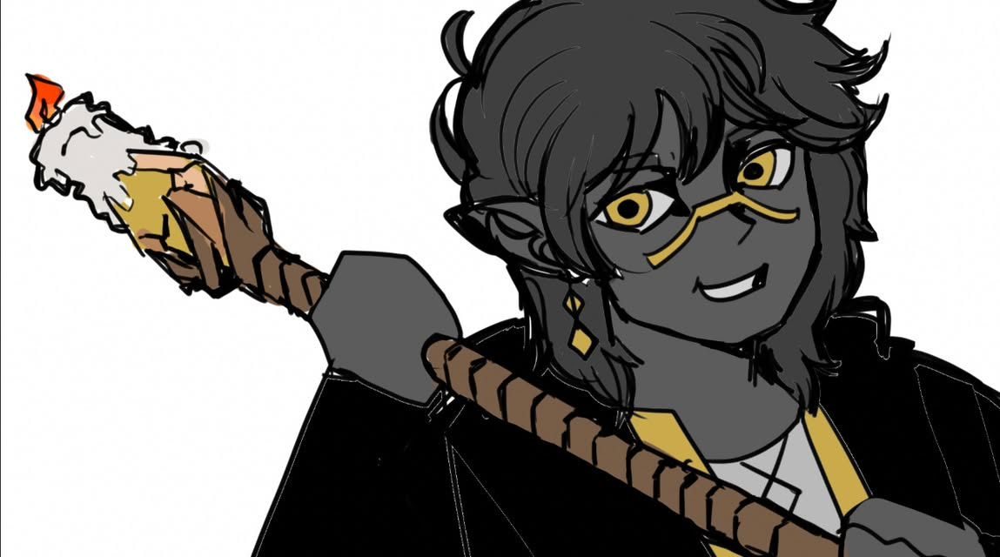
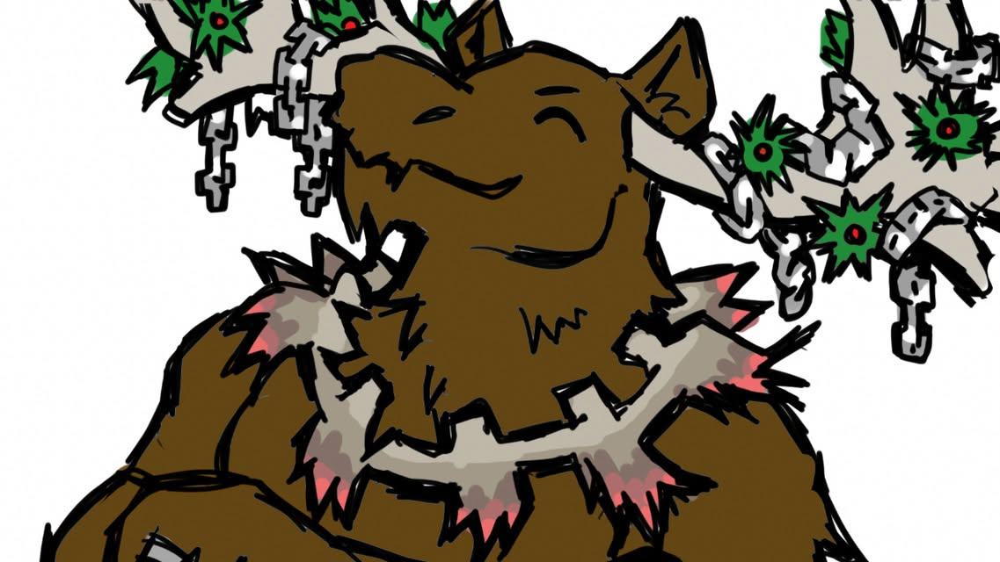
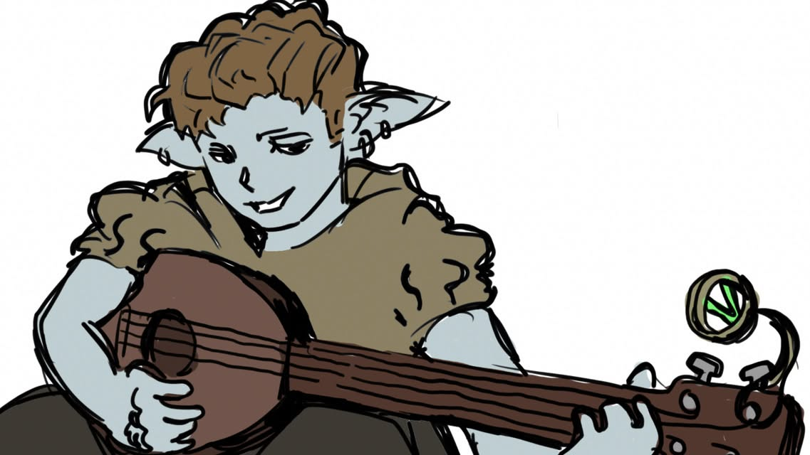
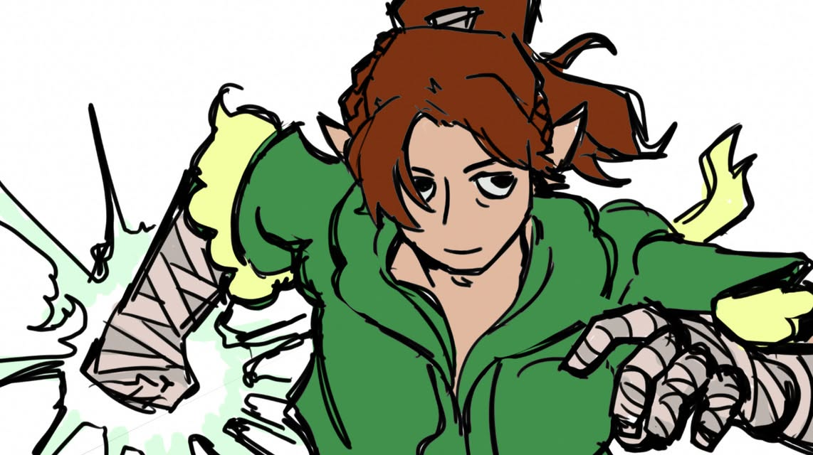
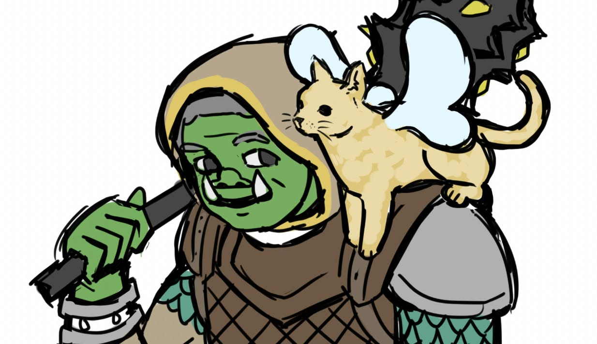
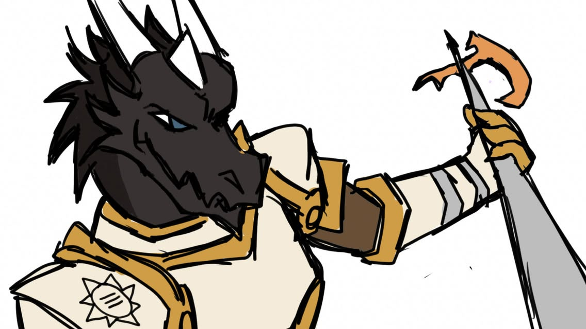

Characters
Meet the adventurers who have shaped the story with bios written by the players. Choose a party on the left to jump to its characters.
Butterfly Court Adventurers

Calrum Wyke
Calrum Wyke was born into the noble Wyke family, a ruling family residing within a pocket dimension, where he was artificially created as a Humonc, a magical being powered by a gem embedded in his chest. Unlike his siblings, Calrum possesses a unique lightning-infused gem, making him a gifted fighter despite his lighthearted personality. After the mysterious disappearance of his sister Aila, Calrum was sent by the family Patriarch to the Slashing Swords Adventuring Academy in the Feywild to search for a powerful artifact. There, he excelled in combat and eventually caught the attention of the Queen, who called upon him to help restore peace to the kingdom.

Giaco Heart
Abandoned in the alleys of Fernstall Giaco learned quickly he had to steal to get by. However, as he grew up he saw all of the other abandoned kids on the street and knew he had to make sure they didn’t end up like him. Giaco found a new purpose in life; to become The King of Jesters and Jester of Kings. He created a performing troupe with the street kids and they worked the streets for tips and the occasional pinched coin purse. One of these “donations” landed him face to face to the headmaster of the Slashing Swords Academy who allowed him to enroll in their Adventuring program which h led to him traveling with Calrum and Atlas. Early in their adventure Giaco put on a necklace with the Stone of Deception on it causing the Fiend Xirok trapped inside to inhabit his body. Now he has to get to Xienon to separate Xirok from his body before it consumes him completely.

Atlas Axelo
Atlas Axelo, once known as the acrobat Gold Storm, has begun to question his place among the Butterfly Court Adventurers as the once inseparable party grows increasingly independent. Through his growing connections with Peebs and Calrum, Atlas has discovered a sense of compassion and responsibility that challenges his former identity. As he struggles with the burdens of his past, Atlas seeks a chance at redemption and the possibility of reclaiming his true identity as Hilbert. He hopes to embrace his old self with the aspiration of studying under Peebs.

Sir Will Udonta
Will Udonta is a Half-Elf that serves under her majesty of Fernstall, the Queen, Victoria, one of the few elite members that is able to serve her, after proving himself to the kingdom for his efforts in the war against the Feywild. Fast forward a decade where he has been now tasked with accompanying an adventuring group from the kingdom's school on a grand task. Having been through a many precarious situations, Will was able to reach attunement with his sword, Iyarugt, Blade of Darkness, in which he is able to command it to fly and battle on its own channeling it through his necklace, Kamish. He is also equipped with wrist blades that have gained power over time and the Queen's personal dagger, Rose, Spellaris' Hunger. During his travels he has also come into the inheritance of the Queen's diadem, which has a crimson red gem infused into, the Stone of Power. Initially facing many problems with wearing the Stone, Will was able to attune with the Stone and hone its power's for his own, boosting his psychic abilites even further...
Viscida Adventurers

March Cogsworth
March is an aspiring wizard in the vast world of Nyooma who has devoted his very existence to the understanding and practice of the arcane arts. He is a 5'10'' Aasimar male, usually seen in a flowy dark grey wizard robe detailed with little golden charms and rings imbedded in the accented golden fabric décor. For an Aasimar, March has a uniquely dark grey skin color which sharply contrast the golden cracks seen throughout his skin. March always has his trust staff and spellbook with him, usually bundled together with the rest of his stuff in a large Persian-esque designed wizard rug. March's wizard staff, an arcane focus candlestick heirloom, as well as his familial curse which binds the ability to manipulate luck are among March's most iconic. March has always dreamed of becoming a legendary adventurer side by side his best friend Wuburg, who ironically accompanies him throughout all of his adventurers thus far. Throughout his most recent journey, March has been mastering Soul magic along with the help of a befriended celestial Delta, progressing to his mastery of the arcane arts and inching him way further to his goal of being the future Archwizard of the land. Among his many unique interests, March finds the greatest joys in life casting, manipulating, and deciphering spells and magic, having a hype fixation on fun goofier spells, such as his iconic Galder's Tower.

Wubrg Greboo
Not much is known of Wubrg Greboo's past on an account of his recklessness within the druidic culture he grew up in. Wubrg goes against most of the strict Druid traditions his family follows, often being scolded for his actions, resulting in him leaving home. Instead of being a traditional follower, Wubrg is defined by his actions as an adveturer along side his best friend, March. Together, Wubrg and his party of adventurers seek celestial relics for their queen and to unite Nymoona one day.

Dorfir Sunvale + Tune
Dorfir Sunvale and what was his alter ego, "Tune", is a bard with a strange secret. Hailing from Viscadia as Dorfir and making the rounds in Oasis as Tune, Dorfir had made quite a name for himself. Tune was very well known across Oasis and to an extent the entire continent of Nymoona, performing in large concerts with the voice of an angel. After the tragedy that took out a massive chunk of Oasis, he moved on to greener pastures and went on a quest for the Stone of Greed, hoping to rediscover himself and what he holds most dear. Dorfir can be described as "scrawny" and very "blue" lacking any amount of elegance that his disguise had. Tune was taller, prettier, and a high elf woman, who had outwardly presented more class than Dorfir by a mile. However, appearances are very deceiving. Dorfir, with his trusty Lute of the Woodsman, is incredibly shy and bashful, with his disguise being somewhat more fiesty and not afraid to fight if things got tough. This would later manifest itself into Dorfir allowing himself to be free of this disguise, allowing Tune to manifest into her own person with her own thoughts and feelings, a sacrifice worth half his soul but allowed Dorfir and Tune to be "closer" as people. They now work as one and will fight to be together forever, believing that the two of them can take on anything as long as they work in harmony.

Alith Anar
Alith Anar is a charming and well-respected member of the royal court of Viscida, known for his loyalty to the crown and his ability to connect with others. Despite his experience with people, Alith often struggles to understand the political intrigue surrounding him, leaving him feeling inadequate among the court's higher ranking officials. Though fiercely devoted to his Queen, he has begun to question his place within the court, where many view him as little more than her loyal mouthpiece. Seeking a greater sense of purpose and independence, Alith finds himself drawn toward adventure beyond the palace walls with March, Wubrg, Dorfir, and anyone they may meet along the way.
Servants of the Light

Brakudal
Brakudal is an elderly Half Orc that comes from the Gooze Isles. Having fought in the war against the feywild and the winter court, Brak is quite prejudiced against fairies. Despite that, Brak is a devout follower of Nemross, ally of the LGBTQ+ community, and serves in the church of Nemross along side his best friend Paladeus. Having seen many atrocities in the War, Brak has a "drinking problem", although if you ask him, he has no problem with drinking more than his fair share. He also has about as many open tabs as there are establishments that serve alcohol. Brak carries a mace that duals as his cane alongside a shield and hydra scailmail. During his many adventures, Brak had become extremely close with Nemross and served as his disciple eventually rising to demi-god hood. With the fall of the dragon gods, Brak ascended to full God hood but relinquished that role as to give him the best chance to return Nemross to power. Brak and all of his armor and accessories were once glowing white but have now changed to a deep midnight navy as Brak now serves under Xi, the Celestial of Night. Brak utilizes his immense power to protect and support his friends and will reluctantly resort to violence if his friends are in danger. Brak and his two cats, a gray talisman named "Mr. Sprinkles" and a fully-grown displacer beast named "Luna", continue on their journey to one day return the Dragon Gods back to power.

Paladeus
Paladeus is a black-and-blue Dragonborn whose dark scales shimmer with an electric sheen, reflecting the stormlike power that crackles through his veins. Born from Krigis, the God of War and a mighty red dragon who commanded the devastating power of fire, Paladeus inherited a formidable draconic bloodline while forging his own mastery over lightning. His origins trace back to an ancient kingdom among the floating islands, a realm lost during the catastrophic events of the Age of Flight. After mysteriously appearing centuries later, he was discovered by the faithful of Nemross and chose to follow his message, becoming a guardian of Brakudal and a servant of the Light. Now, Paladeus walks a world that has nearly forgotten his kind, carrying the legacy of his father while forging his own destiny through courage, conviction, and the untamed storm within him.